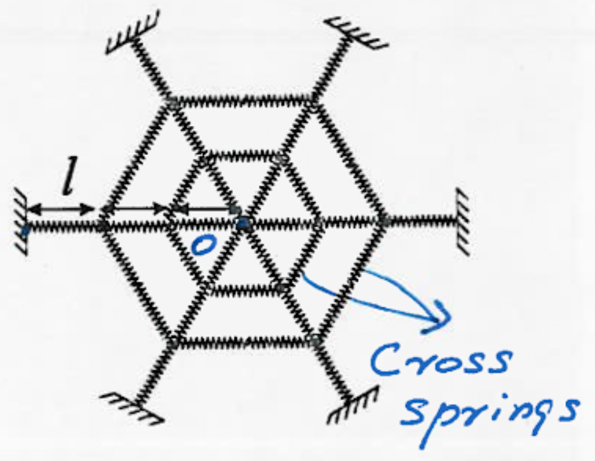

2016 SIN Problem 3
Question
Wandering into an unguarded CANDU reactor in Chalk River, a mild-mannered spider drinks the heavy water and becomes irradiated. Her new found super power is the ability to make a perfectly symmetric web, which she does in the shape of a hexagon, mounted parallel to the ground as shown. Upon completion, the web is unstretched and does not sag vertically. After the spider (mass \(m\)) crawls to the center of the hexagon for a rest, the center sags by \(h=1\text{ cm}\). If each strand of web is a spring with constant \(k=1000 \text{ N/m}\) and length \(l=10\text{ cm}\) in the unstretched state, find the mass of the spider. Answer in grams. \(\textbf{(A) } 0.188 \qquad\textbf{(B) }0.377 \qquad\textbf{(C) } 1.13 \qquad\textbf{(D) } 2.26 \qquad\textbf{(E) } 3.39\)
Solution
The trick to this problem is to ignore the springs that wrap around the web as they do not provide any vertical force. You then have six sets of three springs in series connected to a single mass at the center. It is important to note that when springs are connected via series (as shown in the remarks), the equivalent spring constant is given by: $$k_{eq} = \frac{1}{k_1} + \frac{1}{k_2} + \frac{1}{k_3}$$
Consider just one of the sets of three-strings. Their effective spring constant is \(k_{eq}=\left(3\cdot\frac{1}{1000}\right)^{-1} = 333.33 \text{ N/m}\). After being stretched \(0.01 \text{ m}\) in the vertical direction, the new length of the spring is \(\sqrt{0.30^2+0.01^2}=0.300167 \text{ m}\) and the angle of elevation is \(\tan^{-1}\left(\frac{1}{30}\right) = 1.909^\circ\).
The force along the spring is given by \(F=333.33(0.300167-0.3)=0.05567\) so the vertical component of the force is \(F_y=0.05567\sin(1.909)=0.001854\).
Together, the force provided by all six three-strings is \(6\cdot 0.001854 = 0.011124 \text{ N}\). Letting this equal the weight of the spider gives us the relation: $$mg=0.011124$$
Plugging in \(g=9.81\) gives \(m=0.001135 \text{ kg}\). Converting it to centimeters gives \(\boxed{\textbf{(C) } 1.13}\).
Remarks
- Why is the equivalent spring constant for springs in series like that? Well, consider a mass connected via a wall by two springs in series. These two strings must exert the same force, otherwise there will be a nonzero net force, causing the massless spring to have an infinite acceleration. If they stretch by \(x_1\) and \(x_2\) then \(k_1x_1=k_2x_2\). Using \(x_1+x_2=x\) we can substitute in \(x_2\) to get: \begin{align*} k_1x_1 &= k_2(x-x_1) \\ k_1x_1 + k_2x_1 &= k_2x \\ (k_1+k_2)x_1 &= k_2x \\ x_1 &= \frac{k_2x}{k_1+k_2} \end{align*} Similarly substituting \(x_1\) we get $$x_2 = \frac{k_1x}{k_1+k_2}$$ Therefore: $$k_1x=k_2x=\frac{k_2k_1x}{k_1+k_2}$$ and we get \(k_{eq} = \frac{k_1k_2}{k_1+k_2}\) which is trivial to show that it is equivalent to \(\frac{1}{k_{eq}} = \frac{1}{k_1}+\frac{1}{k_2}\)